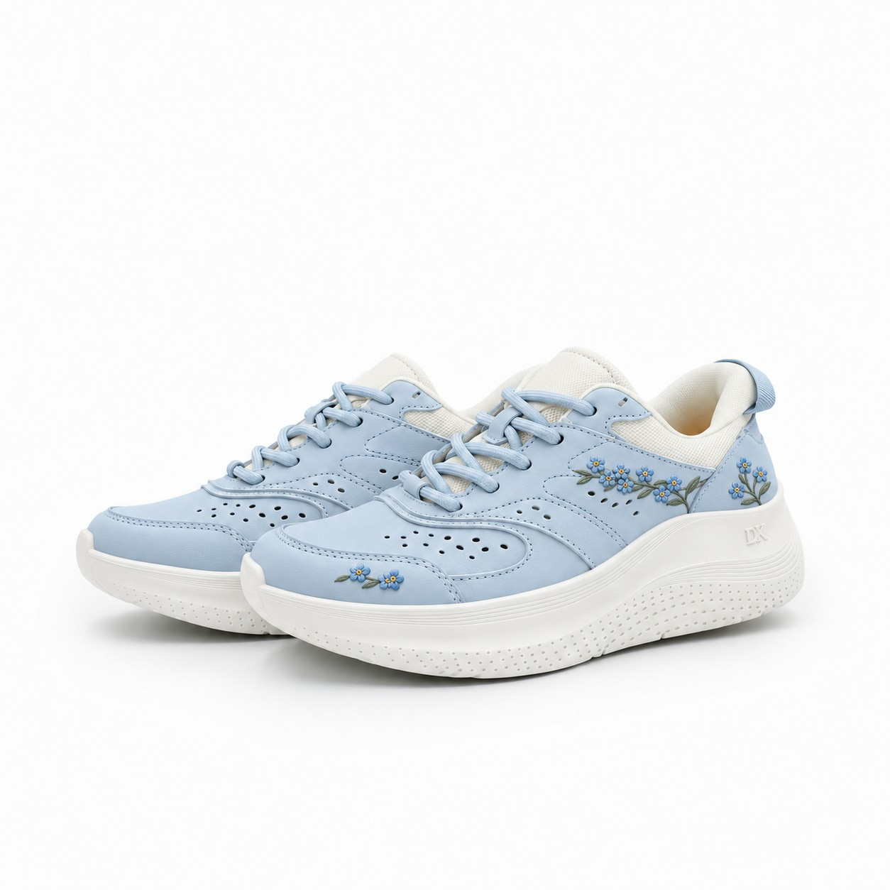

89-6184-60 花意配色｜同事票選
把想說的話，
繡成一朵花。
六款花，六種想帶在身上的心意。
從花的形狀到背後的故事，一起選出最期待開發的下一雙。
每位同事一票 · 請填部門與姓名

01 — 六款花意
選一朵，陪你走。
先看設計與心意，再投下你的一票。
點擊鞋圖，可放大看刺繡細節。
每款花都有自己的形狀與故事。下列文案為 DK 依植物特徵與文化意象延伸的設計寓意；花卉象徵會因地域與文獻而不同。
02 — 留下你的選擇
你最希望
哪一款成真？
這是內部開發意向票選。
一人一票，選出你最期待的花意配色。
- 請填寫完整部門及姓名。
- 可在原瀏覽器修改同一份投票。
- 姓名與部門供內部核對，頁面只顯示總票數。
看看目前的票選結果
每一票，都讓方向更清楚。
展開後讀取目前票數。
結果依提案順序呈現。票選提供開發參考，最終款式仍以後續評估及打樣為準。